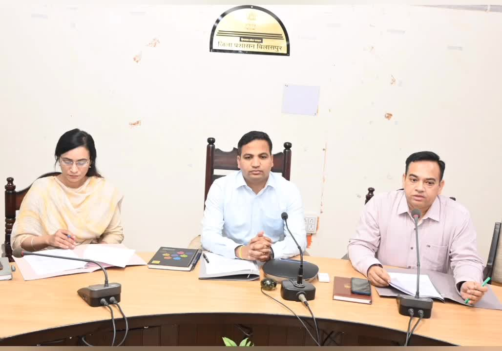
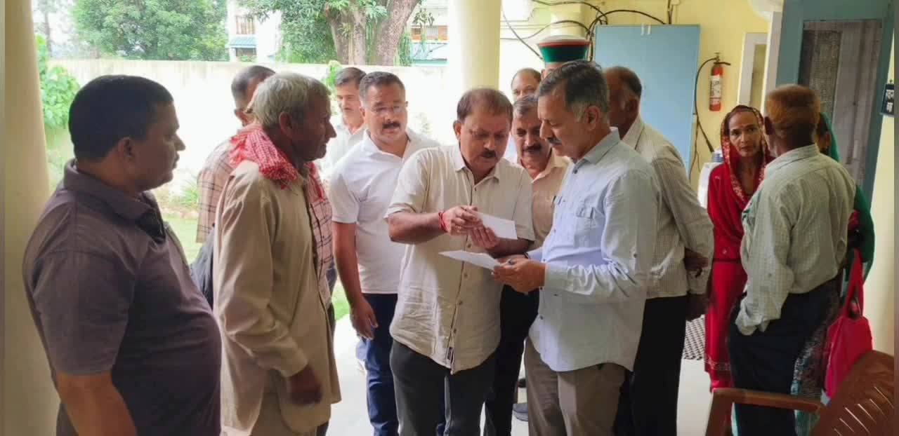

Bilaspur News Hub
1
BUSINESS
2
EDUCATION
7
GOVERNMENT
1
HEALTH
1
INFRASTRUCTURE
19
INSTAGRAM NEWS
8
NEWS
6
POLICE
3
SOCIAL
10
YOUTUBE VIDEOS
BUSINESS1

Lokswar · Published: Sun, 26 Ju | Scraped: 2026-07-26 16:54:24
Kanhaiya Gupta, the Confederation of All India Traders' Sarguja division in-charge, completed his visit to Manendragarh. The tour focused on strengthening trader networks and addressing local business issues.
EDUCATION2

Nai Dunia Bilaspur · Published: Mon, 27 Ju | Scraped: 2026-07-27 05:44:48
The Vyapam exam included questions on Chhattisgarh’s first Ramsar site, the builder of Ramtekri temple, and a difficult mathematics problem. Candidates struggled especially with the math section.

Nai Dunia Bilaspur · Published: Mon, 27 Ju | Scraped: 2026-07-27 05:44:48
RTI filings have uncovered corruption in schools, leading police to summon 47 teachers from Kotta block for questioning. The revelations highlight widespread malpractice in the education system.
GOVERNMENT7

Lokswar · Published: Sun, 26 Ju | Scraped: 2026-07-26 08:12:13
Raids were conducted by the Enforcement Directorate and Income Tax Department at a businessman's residence in Baloda Bazar. Authorities are examining seized documents to uncover possible financial irregularities.

Nai Dunia Bilaspur · Published: Sun, 26 Ju | Scraped: 2026-07-26 12:58:00
Large-scale Vyapam and PSC examinations were conducted across 82 centers in Bilaspur today. Police were deployed outside each center and route diversions were implemented to ensure smooth traffic flow. The exams proceeded without major incidents.

Lokswar · Published: Sun, 26 Ju | Scraped: 2026-07-26 12:58:00
A Chhattisgarh High Court judge, who holds the portfolio for Raigarh, visited the district courts and jail today. He conducted an annual inspection of the judicial facilities. The visit aimed to assess the functioning and security arrangements.
Lokswar · Published: Sun, 26 Ju | Scraped: 2026-07-26 16:54:24
Congress staged a unique protest in Bodri, with women breaking pots, against alleged theft of donations for the Ayodhya Ram temple. The demonstration highlights concerns over misappropriation of temple funds.

CG Wall · Published: Mon, 27 Ju | Scraped: 2026-07-27 05:44:48
Anurag secured a decisive victory in the District Advocates Association biennial election, winning the president post by 380 votes. The results were declared after counting on Sunday, marking a significant performance for his campaign.
The Hitavada · Scraped: 2026-07-27 05:44:48
A task force headed by Nandan Nilekani will draft a roadmap for exam reforms, announced by the Prime Minister. The initiative aims to address systemic issues and improve fairness in competitive examinations.
G News Bilaspur · Published: 2026-07-26 | Scraped: 2026-07-26 15:03:22
The Bilha block Congress committee staged a unique protest demanding action after donation theft at a local temple.
HEALTH1
BREAKINGRain Boosts Animal and Snake Bite Risks in Bilaspur / बारिश से जीव जन्तुओं का खतरा, सर्पदंश बढ़ रहा
G News Bilaspur · Published: 2026-07-26 | Scraped: 2026-07-26 15:03:22
Monsoon rains in Bilaspur have driven snakes and other animals into populated areas, raising the risk of snake bites and related injuries.
INFRASTRUCTURE1

Nai Dunia Bilaspur · Published: Sun, 26 Ju | Scraped: 2026-07-26 11:26:15
Bilaspur unveiled a novel selfie spot on its flyover, featuring a water walkway for visitors to stroll and capture photos. The attraction adds a fresh recreational option for locals and tourists alike.
INSTAGRAM NEWS19


A new post shared by @bilaspur_today_news on Instagram, likely featuring local news updates and community highlights.


नई आभूषण दुकान 'बुद्धा मल एंड संस' ने आयमा में यामिनी होटल के पास अपना संचालन शुरू किया है, जो स्थानीय ग्राहकों को गुणवत्तापूर्ण आभूषण प्रदान करेगी। यह क्षेत्र में व्यापारिक गतिविधियों को बढ़ावा देगा।


यह पोस्ट बिलासपुर टुडे न्यूज़ के आधिकारिक इंस्टाग्राम हैंडल से है, जो नियमित अपडेट और स्थानीय समाचार साझा करता है। यह समुदाय के साथ जुड़ाव और जानकारी साझा करने पर केंद्रित है।

बिलासपुर पुलिस ने 12 ग्राम चिट्टे के साथ एक युवक को गिरफ्तार किया और एनडीपीएस अधिनियम की धारा 21 के तहत मामला दर्ज किया। जाँच जारी है और ड्रग्स के खिलाफ सख्त कार्रवाई की जा रही है।


एक छात्र ने NEET 2026 में सफलता हासिल करने के बाद अपनी खुशी व्यक्त की और 'ड्रीम. बिलीव. अचीव' के संदेश के साथ अन्य छात्रों को प्रेरित किया। यह उपलब्धि कड़ी मेहनत और दृढ़ संकल्प का परिणाम है।


Jay Lahre, a constable posted at Hasoud police station, was found dead by hanging inside the station building. Police are investigating the circumstances surrounding his death.


नीट यूजी पेपर लीक विवाद के बीच केंद्रीय शिक्षा मंत्री धर्मेंद्र प्रधान के इस्तीफे के बाद प्रहलाद जोशी को शिक्षा मंत्रालय की जिम्मेदारी सौंपी गई है। छात्र आंदोलनों और परीक्षा में कथित गड़बड़ियों के बीच हुए इस बदलाव के बाद अब शिक्षा व्यवस्था में सुधार की उम्मीदें बढ़ गई हैं। प्रहलाद जोशी कर्नाटक के धरवाड़ से कई बार सांसद रह चुके हैं और केंद्र में कई अहम मंत्रालयों की जिम्मेदारी संभाल चुके हैं।
#NEETUG #NEETPaperLeak #EducationMinister #DharmendraPradhan #PrahladJoshi #EducationMinistry #BreakingNews #StudentProtest #ExamReforms #IndiaNews #HindiNews #LatestNews #EducationNews #BJP #NewsUpdate by @g_news_bilaspur


13.39 ग्राम चिट्टा बरामदगी मामले में बड़ी सफलता: बैकवर्ड इन्वेस्टिगेशन में मुख्य सप्लायर पंजाब से गिरफ्तार
जिला बिलासपुर पुलिस द्वारा नशा तस्करी के विरुद्ध चलाए जा रहे व्यापक अभियान के तहत थाना कोट कहलूर पुलिस ने एक महत्वपूर्ण सफलता हासिल की है। 13.39 ग्राम चिट्टा/हेरोइन बरामदगी मामले की गहन बैकवर्ड इन्वेस्टिगेशन, डिजिटल एवं इलेक्ट्रॉनिक साक्ष्यों के विश्लेषण तथा मनी ट्रेल की जांच के आधार पर नशे की खेप के मुख्य सप्लायर को होशियारपुर (पंजाब) से गिरफ्तार किया गया है।
बिलासपुर पुलिस का लक्ष्य केवल नशीले पदार्थों की बरामदगी तक सीमित नहीं है, बल्कि नशा तस्करी के पूरे नेटवर्क को चिन्हित कर उसे जड़ से समाप्त करना है। प्रत्येक मामले में बैकवर्ड एवं फॉरवर्ड लिंक की गहन जांच कर मुख्य सप्लायरों और नेटवर्क संचालकों तक पहुंचकर उनके विरुद्ध कठोर कानूनी कार्रवाई सुनिश्चित की जा रही है।
*नशे के विरुद्ध हमारी लड़ाई लगातार जारी है। आइए, नशा मुक्त � by @bilaspur_today_news

चकरभाठा बस्ती क्रिकेट मैदान में नवयुवकों को साइबर सुरक्षा एवं साइबर अपराध, चेतना विरुद्ध नशा, यातायात के नियमों के पालन करने के संबंध में जागरूक किया गया। by @bilaspurdist
बिलासपुर पुलिस की हाईटेक बीट प्रणाली को और अधिक मजबूत करने की दिशा में जिले के SSP रजनेश सिंह, IPS द्वारा पुलिस लाइन में बीट आरक्षकों को 48 मोटरसाइकिलें सौंपी गईं। साथ ही सभी को निर्देशित किया गया कि जिले की हर गली, मोहल्ले और चौराहे पर असामाजिक तत्वों, अड्डेबाजों एवं नशाखोरों पर पुलिस की सतत मौजूदगी बनाए रखते हुए अपराधों पर प्रभावी लगाम लगाएँ। 🚨Source : @patrika_chhattisgarh News Article by : @ravi_tripathi010#BilaspurPolice BeetPolicing CrimePrevention by @bilaspurdist
A regular update or story shared by @bilaspur_today_news on Instagram, likely featuring local news or community content. The post may include photos, announcements, or community highlights.
A post from @bilaspurdist on Instagram, possibly sharing district updates, events, or community information. The content helps residents stay informed about local activities and announcements.
बिलासपुर पुलिस द्वारा अपराध नियंत्रण के लिए फिर एक सराहनीय पहल
पुलिस कप्तान रजनेश सिंह के नेतृत्व में शहर के सभी थानों मे 48 वाहनों को हरी झंडी दिखाया गया है .इस नए बीट प्रणाली का उद्देश्य गली मोहल्ले में जाकर लोगों से संपर्क बनाकर क्षेत्रो में असमाजिक तत्वों पर लगाम कसना और उनपर सीधी नजर रख उनके द्वारा अपराध को रोकना है .#chattisgadh #bilaspurnews #bilaspurpolice #bilaspur #breaking by @decode_bilaspur

A social media post from @bilaspur_today_news sharing local updates or visuals. The post likely highlights community news or events in Bilaspur.

A social media post from @bilaspur_today_news on Instagram. The post appears to be a generic update from the account. No specific details are provided in the snippet.
NEWS8

Nai Dunia Bilaspur · Published: Sun, 26 Ju | Scraped: 2026-07-26 08:12:13
During the Kargil war, two lesser-known soldiers excelled under extreme cold. One maintained artillery readiness while the other ensured vital supplies reached the front at -20°C, contributing to victory.

Lokswar · Published: Sun, 26 Ju | Scraped: 2026-07-26 08:12:13
The IMD has issued a red alert for heavy rainfall across Chhattisgarh due to a strong low-pressure system over the Bay of Bengal. Residents are advised to stay cautious and avoid flood-prone areas.

Lokswar · Published: Sun, 26 Ju | Scraped: 2026-07-26 11:26:15
A bus on Ganga Expressway collided with a divider early Sunday, resulting in two deaths and over 25 injuries. Emergency teams rushed victims to hospitals while authorities launch a probe into the crash.
.jpg)
Nai Dunia Bilaspur · Published: Sun, 26 Ju | Scraped: 2026-07-26 16:54:24
<img src="https://img.naidunia.com/naidunia/ndnimg/26072026/26_07_2026-social_media_content_against_mla_anuj_sharma_(1).jpg" />कोर्ट ने संबंधित सोशल मीडिया प्लेटफॉर्म, अकाउंट संचालकों और कंटेंट क्रिएटर्स को नोटिस जारी कर जवाब भी मांगा है।

Nai Dunia Bilaspur · Published: Sun, 26 Ju | Scraped: 2026-07-26 16:54:24
<img src="https://img.naidunia.com/naidunia/ndnimg/26072026/26_07_2026-bilaspur_high_court_26july.jpg" />अदालत ने माना कि वैधानिक प्रविधान के अभाव में कर देनदारी स्वतः कानूनी वारिसों पर स्थानांतरित नहीं की जा सकती।

Nai Dunia Bilaspur · Published: Sun, 26 Ju | Scraped: 2026-07-26 16:54:24
<img src="https://img.naidunia.com/naidunia/ndnimg/26072026/26_07_2026-government_education_system.jpg" />विकासखंड ओड़गी के ग्राम पंचायत कर्री में सरकारी शिक्षा व्यवस्था की बदहाल तस्वीर सामने आई है। प्राथमिक एवं माध्यमिक विद्यालय में कुल नौ शिक्षक पदस्थ हैं, लेकिन शनिवार को केवल एक शिक्षक ही विद्याल

CG Wall · Published: Sun, 26 Ju | Scraped: 2026-07-26 16:54:24
बिलासपुर… सोशल मीडिया पर तेजी से वायरल हुई ‘5 करोड़ रुपये की चोरी’ की खबर आखिरकार अफवाह साबित हुई। बिलासपुर पुलिस ने एफआईआर दर्ज होने के कुछ ही घंटों के भीतर मामले का खुलासा करते हुए तीन विधि से संघर्षरत बालकों को अभिरक्षा में लिया और उनके कब्जे से चोरी गया अधिकांश मशरूका बरामद कर

CG Wall · Published: Sun, 26 Ju | Scraped: 2026-07-26 16:54:24
रायगढ़… छत्तीसगढ़ उच्च न्यायालय के न्यायाधीश एवं रायगढ़ जिले के पोर्टफोलियो जज जस्टिस सचिन सिंह राजपूत ने दो दिवसीय दौरे के दौरान जिले के न्यायालयों और जिला जेल का वार्षिक निरीक्षण किया। निरीक्षण के दौरान उन्होंने न्यायिक कार्यप्रणाली, न्यायालयीन व्यवस्थाओं और बंदियों को उपलब्ध कराई जा रही सुव
POLICE6

Lokswar · Published: Sun, 26 Ju | Scraped: 2026-07-26 08:12:13
A new online scam targeted jewellers in Raipur by promising gold purchases. The fraudster stole around ₹2 lakh and has fled, prompting police investigation.

Lokswar · Published: Sun, 26 Ju | Scraped: 2026-07-26 08:12:13
A police constable, Jai Lahre, was found hanging in the barracks of Hasoud police station in Sakti district. The incident has shocked the local police community and prompted an inquiry.

Lokswar · Published: Sun, 26 Ju | Scraped: 2026-07-26 11:26:15
The new station house officer in Sirgitti swiftly launched raids on suspected criminals and enforced strict measures against public drunkenness. His proactive steps aim to strengthen law and order in the area.

CG Wall · Published: Mon, 27 Ju | Scraped: 2026-07-27 05:44:48
A 25‑year‑old attack victim died despite years of legal battle, prompting the Chhattisgarh High Court to stress that punishments must instill fear of law in criminals. The court emphasized stronger deterrence.

CG Wall · Published: Mon, 27 Ju | Scraped: 2026-07-27 05:44:48
Kota police arrested a gang that snatched mobiles by pretending to make emergency calls. The culprits posed as needing to call for help, then grabbed victims' phones. The operation highlights rising mobile theft concerns.

CG Wall · Published: Mon, 27 Ju | Scraped: 2026-07-27 05:44:48
Police launched a major operation against anti-social elements, arresting 10 gangsters including Deepak Sahu. The accused were presented in court as part of ongoing law and order drives. The action aims to curb criminal activities in the district.
SOCIAL3
Anurag Bajpai elected president of Bilaspur Advocates Association / बिलासपुर जिला अधिवक्ता संघ चुनाव में अनुराग बाजपेयी अध्यक्ष बने, 75% मतदान
Lokswar · Published: Sun, 26 Ju | Scraped: 2026-07-26 12:58:00
The Bilaspur District Advocates Association held elections with 75% voter turnout. Anurag Bajpai emerged victorious and was declared president. The results were announced after the polling concluded.

9th-grade girl breaks tradition, travels to Prayagraj for father's last wish pindadaan / पिता की अंतिम इच्छा पूरी करने 9वीं की छात्रा ने परंपरा तोड़ी, प्रयागराज पहुँची और पिंडदान किया
Nai Dunia Bilaspur · Published: Mon, 27 Ju | Scraped: 2026-07-27 05:44:48
A ninth‑class student traveled to Prayagraj to perform a pindadaan ritual, fulfilling her father’s last wish and breaking local tradition. The act reflects personal devotion over customary norms.
BREAKINGWoman Accused as Witch, Boycotted, Police Crackdown on Offenders / अंधविश्वास में महिला को टोनही बताकर बहिष्कार, पुलिस कार्रवाई
G News Bilaspur · Published: 2026-07-26 | Scraped: 2026-07-26 15:03:22
A woman was ostracised as a witch under baseless superstition; police have arrested several accused, highlighting ongoing social issues.
YOUTUBE VIDEOS10


यह बिलासपुर का अंतिम समाचार बुलेटिन है, जो 26 जुलाई 2026 की सुबह की ताजा खबरों को प्रस्तुत करता है। इसमें क्षेत्रीय विकास, सुरक्षा और अन्य महत्वपूर्ण अपडेट शामिल हैं।


Classes have started across Bilaspur schools, yet many students still lack textbooks. Officials have promised rapid distribution to ensure learning is not disrupted.


Police in Bilaspur have arrested six individuals accused of creating disturbances in public areas. The arrests were made following complaints and investigations. Authorities aim to maintain peace and prevent further incidents.


The Vyapam conducted the assistant librarian and laboratory recruitment examination in Bilaspur today. The exam was completed smoothly with proper supervision. Results are expected soon for the candidates.


Police in Bilaspur solved a house burglary, identifying thieves and recovering stolen goods. The case showcases local police efficiency in tackling property crimes.


Symbolic pot breaking protest against BJP in Bilaspur / प्रतीकात्मक मटकी फोड़कर भाजपा पर साधा निशाना
Activists staged a symbolic pot‑breaking protest in Bilaspur to criticise BJP policies, using traditional imagery for political commentary. The demonstration attracted local media attention.


The latest evening final news bulletin for Bilaspur on 26 July 2026 covers top regional updates and developments.
Stray cattle are increasingly threatening safety and mobility in Bilaspur’s Smart City area, prompting calls for effective management.
प्रधानमंत्री के मन की बात कार्यक्रम में कोरबा के उल्लेख ने बढ़ाया छत्तीसगढ़ का मान